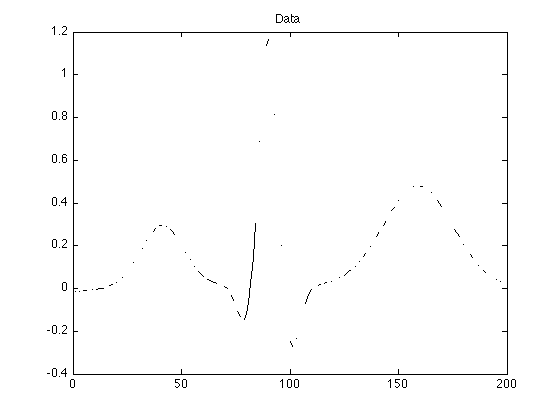
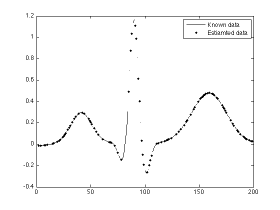
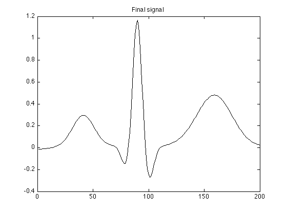
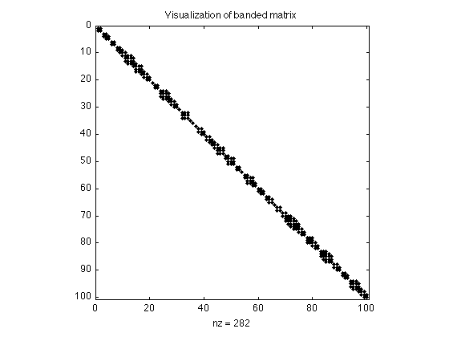

Estimation of missing data
Estimate missing data by least squares: Minimize the energy of second-order derivative subject to the data consistency constraint.
Ivan Selesnick selesi@poly.edu
Contents
Start
clear
close all
Load data
load data.txt; whos y = data; % y : data value N = length(y); n = 1:N;
Name Size Bytes Class Attributes data 200x1 1600 double
Missing data appear as NaN's
y(1:10) % The first 10 data values
ans =
-0.0144
NaN
-0.0126
NaN
-0.0108
-0.0099
NaN
NaN
-0.0065
NaN
Display data
The NaN's appear as gaps in the plot
figure(1)
clf
plot(n, y)
title('Data')
 Define matrix D
D represents the second-order derivitive (2nd-order difference). D is defined as a sparse matrix so that Matlab subsequently uses fast solvers for banded systems.
e = ones(N, 1); D = spdiags([e -2*e e], 0:2, N-2, N);
Fist corner of D:
full(D(1:5, 1:5))
ans =
1 -2 1 0 0
0 1 -2 1 0
0 0 1 -2 1
0 0 0 1 -2
0 0 0 0 1
Last corner of D:
full(D(end-4:end, end-4:end))
ans =
1 0 0 0 0
-2 1 0 0 0
1 -2 1 0 0
0 1 -2 1 0
0 0 1 -2 1
Define matrices S and Sc
k = isfinite(y); % k : logical vector, indexes known values S = speye(N); S(~k, :) = []; % S : sampling matrix Sc = speye(N); % Sc : complement of S Sc(k, :) = []; L = sum(~k) % L : number of missing values
L = 100
Estimate missing data
Least square estimation of missing data. Note that the system matrix is banded so the system equations can be solved very efficiently with a fast banded system solver. By defining S and D as sparse matrices, Matlab calls a fast banded system solver by default.
v = -(Sc * (D' * D) * Sc') \ ( Sc * D' * D * S' * y(k)); % v : estimated samples
Fill in unknown values
Place the estimated samples into the signal.
x = zeros(N,1); x(k) = y(k); x(~k) = v; % The above 3 lines is a more direct way to implement: % x = Sc' * v + S'*y(k); figure(1) clf plot(n, y, 'k', n(~k), x(~k) ,'k.') legend('Known data', 'Estiamted data')
figure(1)
clf
plot(n, x )
title('Final signal')
 Banded matrix visualization
As noted above, the system matrix is banded. This can be visualized with the 'spy' command in Matlab:
G = Sc * (D' * D) * Sc'; figure(1) clf spy(G) title('Visualization of banded matrix') % It can be seen that all the non-zero elements of G lie near the diagonal.